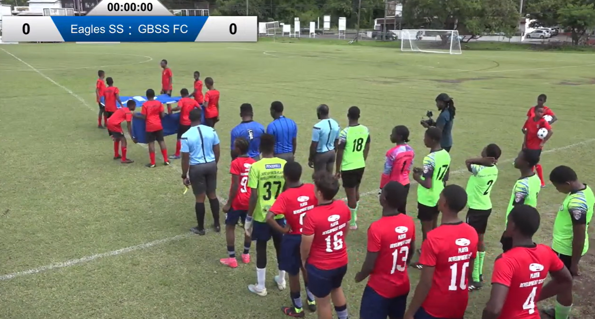

Hello! I'm a student at T.A. Marryshow college, interested in technology, sports, and creativity.
I am particularly interested in computer technology, and sports. In my free time, I enjoy playing games, listening to music, watching movies, and spending time with friends and family.
My goal is to continue developing my skills and gain more experience that will help me in the future in both IT and Football. I hope to use my knowledge and creativity to work on interesting projects and build a successful career in technology and sports.


Email: aundrestanisclaus@gmail.com
Phone: 1-(473)-0000-00000